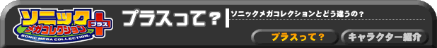
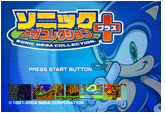
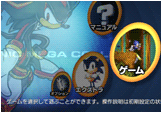
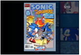
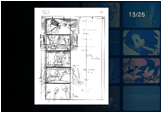

1991 年、超音速であらわれたソニック。
そのソニックのデビュー作「ソニック・ザ・ヘッジホッグ」を
はじめとした、これまでのソニックのゲームを、ぎゅーっと
1 本に集めたのが 『ソニック メガコレクション プラス』。

はじめから遊べる7個のゲームに、ある条件を満たすと
秘密のゲーム7個をプラス。全部で14個のゲームが遊べます！ さらに、ゲーム6個がプラスされてあわせて20本も遊べちゃう！ メガドライブやゲームギアといった、 セガのゲーム機で大活躍したソニックの歴史がこれ一本で楽しめるぞ！

さらに、さらに！アメリカのソニックコミックの表紙や、
昔のゲームのパッケージなどソニックの色々な情報が
わかります。世界中の人気者 ソニックの意外な表情も
見る事ができます。

ソニックの“あのゲーム”のメイキングムービーもプラスされて
います。画面の中せましと駆け抜けるソニックができるまでが
見る事ができます。超秘蔵映像！
